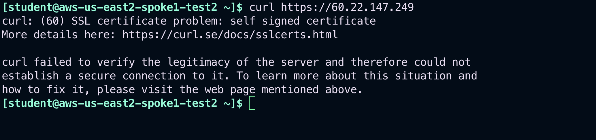

Lab 9 - THREATIQ & THREATGUARD#
1. Objective#
This lab will demonstrate how ThreatIQ and ThreatGuard work (both features of the Distributed Cloud Firewall functionality).
2. ThreatIQ Overview#
Aviatrix gateways send NetFlow data to CoPilot. CoPilot uses this data in many ways. FlowIQ is one. ThreatIQ is another. ThreatIQ alerts you on Malicious IPs with bad reputations. These IPs are reported in the ThreatIQ database that CoPilot maintains.
3. Topology#
In this lab, we will be using the same topology that was used in Lab 6 with the Egress functionality.
 Figure 205: Lab 9 Initial Topology
Figure 205: Lab 9 Initial Topology
4. Configure ThreaIQ#
4.1. SSH to the EC2 instance in AWS US-EAST-2#
SSH to the aws-us-east2-spoke1-test2 instance in AWS aws-us-east2-spoke1 VPC.
Warning
Bear in mind that the aws-us-east2-spoke1-test2 instance is in a private subnet, therefore, you have first to SSH to an EC2/VM that resides in a public subnet!
 Figure 206: SSH to aws-us-east2-spoke1-test2
Figure 206: SSH to aws-us-east2-spoke1-test2
Try launching the following commands from the aws-us-east2-spoke1-test2 instance.
curl www.aviatrix.com
curl www.firefox.com
curl www.wikipedia.com
 Figure 207: Curl commands
Figure 207: Curl commands
Note
All egress traffic should be allowed, thanks to the Greenfield-Rule still in place.
4.2. Enable ThreatIQ and ThreatGuard
Navigate to CoPilot > Security > ThreatIQ > Configuration
Click on Send Alert:
 Figure 208: Enable ThreatIQ
Figure 208: Enable ThreatIQ
Then click on Notification Settings.
 Figure 209: Notification Settings
Figure 209: Notification Settings
Now click on the "+ Email Address" button.
 Figure 210: Email
Figure 210: Email
Choose an alias, insert your **personal email **and then click on Save:
 Figure 211: Alias and Personal Email
Figure 211: Alias and Personal Email
Navigate back to CoPilot > Security > ThreatIQ > Configuration
Click again on Send Alert:
 Figure 212: Send Alert Settings
Figure 212: Send Alert Settings
Click on Add Recipients.
 Figure 213: Add Recipient(s)
Figure 213: Add Recipient(s)
Select your email address from the pulldown menu and then click on Confirm.
 Figure 214: Add your email
Figure 214: Add your email
From this point onwards, if you enter a valid email address, you will receive email notifications about ThreatIQ alerts.
Before enabling the blocking, on the far right side, ensure that the ThreatGuard firewall rules order is set to Prepend.
 Figure 215: Prepend
Figure 215: Prepend
Enable Block Threats (i.e. ThreatGuard):
 Figure 216: ThreatGuard
Figure 216: ThreatGuard
By default, all VPCs are enabled for ThreatGuard.
Click Save to continue.
 Figure 217: Select VPC
Figure 217: Select VPC
Then, click CONFIRM.
 Figure 218: Confirm
Figure 218: Confirm
5. Verification#
Wait for the instructor to provide a malicious IP. Let’s call it <malicious-IP>.
Note down this IP address!
SSH back to the EC2 instance aws-us-east2-spoke1-test2
Now test
ThreatGuardby first issuing this command (make sure to enter HTTPS):
curl https://<malicious-IP>
 Figure 219: Curl towards the malicious IP
Navigate back to CoPilot > Security > ThreatIQ > Overview
Note
Wait for some minutes, before proceeding with the next action. Furthermore, set the Time Period to "Custom" and then set the end time a bit farther than your current time: